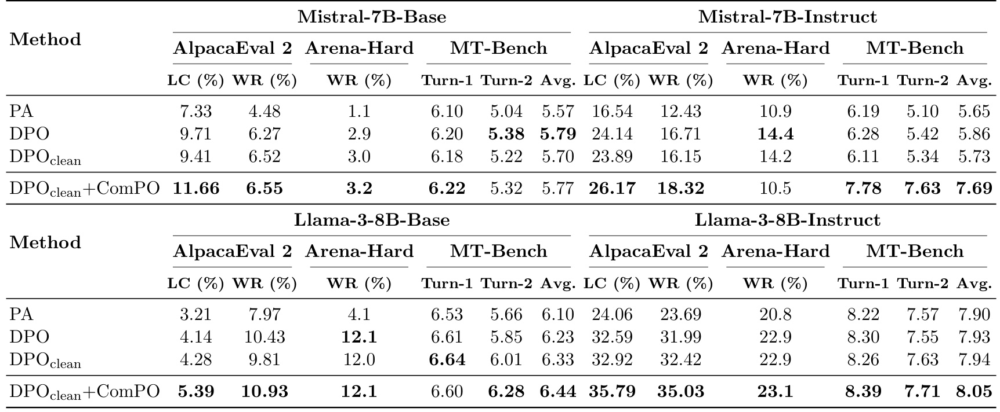
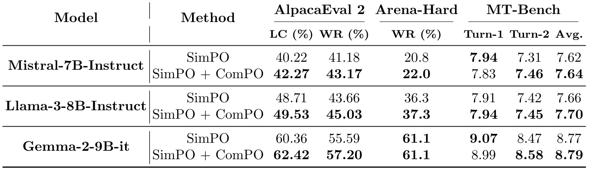
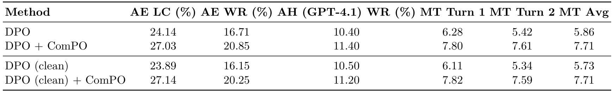
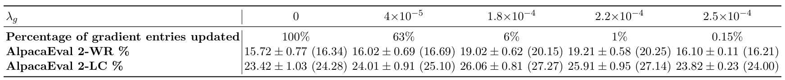
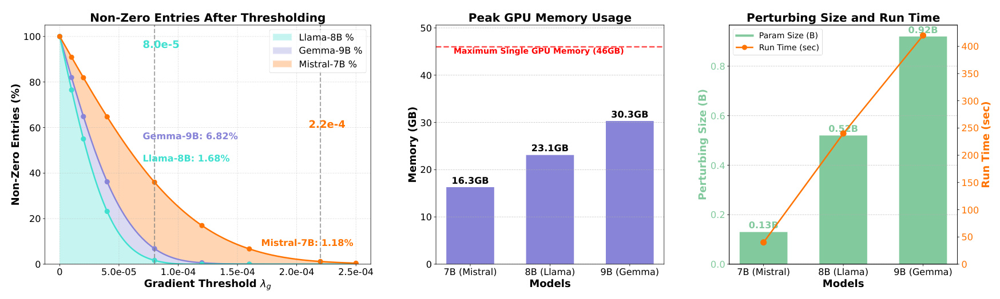
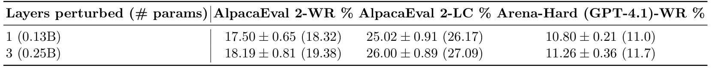
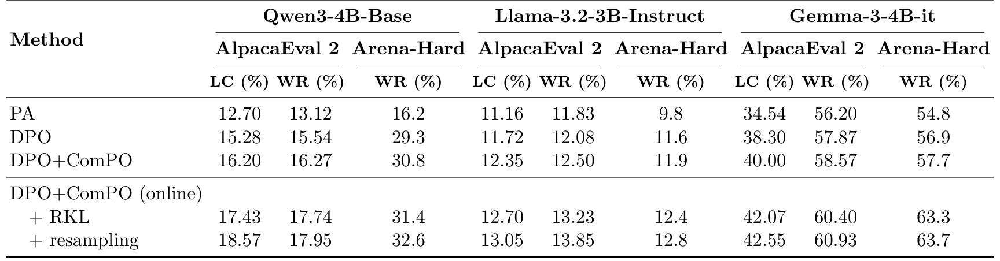

A Zeroth-Order Paradigm for LLM Preference Alignment
中文译名：大语言模型偏好对齐的零阶范式（ComPO）
- 作者：Peter Chen、Xi Chen、Wotao Yin、Tianyi Lin。
- 一作机构：加州大学伯克利分校 EECS；合作机构包括纽约大学 Stern 商学院、阿里巴巴美国达摩院西雅图决策智能实验室、哥伦比亚大学 IEOR。
- 论文入口：arXiv:2609.19144，2026 年 9 月 16 日公开 v1；阅读日期为 2026 年 9 月 18 日。
- 版本性质：NeurIPS 2025 论文的期刊扩展预印本，当前首页写明审稿中。新增重点是在线 ComPO、局部覆盖分析，以及 Qwen3、Gemma-3 等模型与阻尼、重放实验。离线 ComPO 本身不是本周首次提出。
- 主类别：LLM；关键词：偏好优化、似然位移、比较 oracle、零阶更新、反向 KL。代码状态：本轮未核验到本文独立代码或项目入口。
1. 背景和问题
低似然差的偏好对可能不适合直接优化固定的偏好损失，但把它们完全过滤掉，也会丢失仍然有用的局部比较信息。
这句话对应论文引言对研究缺口的解释。偏好训练的一条样本包含提示词、较受偏好的回答和较不受偏好的回答。通常的直觉是：让模型更容易生成前者、更不容易生成后者，就更接近人的选择。然而，相对偏好训练真正优化的对象常常是两个回答的似然之差，或者相对于参考模型的似然比之差。这个代理量可以改善，而两个回答各自的绝对概率未必按预期变化。本文关注的似然位移，就是偏好回答相对于非偏好回答变得更占优势，但偏好回答本身也被模型降低了概率，释放出来的质量流向两条训练回答以外的候选。由于语言模型输出空间巨大，训练对之外的去向可能比训练对内部的胜负更重要。
论文第 5 页用 DPO 的标准目标把这个区别写得很清楚：
符号解释：$x$ 是提示词，$y^+$ 与 $y^-$ 分别为偏好和非偏好回答；$\pi_\theta$ 为待训练策略，$\pi_{\mathrm{ref}}$ 为参考策略，$\beta$ 控制相对参考策略的尺度，$\sigma$ 为 sigmoid 函数，$\mathcal D$ 为偏好数据集。式中只有两个对数似然比的差进入分类损失，因此损失下降并不直接保证正例概率上升。这里的分析针对优化目标所允许的行为，并非声称每次 DPO 更新都会发生似然位移，也不是把 DPO 的全部收益归结为一个缺陷。
一个简化理解是：正例对数似然降低一点、负例降低更多，相对差仍然扩大；但生成时模型可能因此更倾向某个未出现于偏好对的回答。原文引述先前工作中拒绝行为退化的案例，用来说明位移可能影响安全性；它不是本文重新进行的大规模安全评测。偏好对之间的语义相似度、初始模型、多个样本的参数共享、有限容量都可能介入这种现象。附录 A 特别列出不同解释，说明作者没有把低似然差宣称为唯一原因。对精读者而言，这意味着后续实验的任务是检验一种有针对性的修正路线，不能据此宣布已完整解释语言模型的对齐失败。
本文所称的 noisy pairs，中文更准确的理解是“模型看来区分度低的偏好对”。它们依据参考模型分配给正负回答的对数似然差筛出，不要求标签真的被污染。人的偏好可能明确，但参考模型对两个回答给出相近概率；也可能两个回答文本相似，只有小片段决定质量；还可能序列长度差异影响了整句似然。因而“小差值”“语义相似”“标注错误”是三个相关但不同的属性。把它们混为一谈，会错误推导出 ComPO 可以自动发现假标签、修复所有噪声，甚至无需可信监督。实际上，它仍相信现有正负标签，只改变利用它们的训练方式。
已有过滤路线把疑似不利于直接优化的样本从训练数据中移除，优点是简单，不需要另外拟合奖励模型。论文提到更复杂的隐藏表征相似性指标 CHES，也承认廉价的似然差只是一个不完善的筛选代理。ComPO 的出发点是保留被筛掉的这部分数据，只向它们询问更弱的问题：在当前策略附近做一个小扰动，正例平均概率有没有上升、负例平均概率有没有下降？回答只需一个二值比较结果，不必给出可信的全局奖励数值，也不必对这批困难样本的固定偏好损失求梯度。这样可以把“适合梯度训练的数据”和“仍能提供局部方向的数据”分开。
这个选择背后有一个很实际的折中。零阶方法可以省去全模型反向传播需要保存的激活和梯度，但要花费大量前向查询来寻找方向。若直接在数十亿参数中随机试探，信息效率通常很差。作者因此引入一比特压缩感知的视角，把比较结果看成梯度方向的量化测量，并在实践中限制扰动到输出层，再对方向坐标做稀疏截断。这些设计彼此相关：局部比较降低了监督强度，稀疏结构帮助恢复方向，输出层限制控制搜索维度。它们共同构成一个对既有对齐模型进行小步修正的模块，而不是从零训练通用模型的替代方案。
本次版本最值得单独关注的是“在线”二字的含义。在线 ComPO 仍使用固定离线偏好对确定更新方向；当前模型新生成的回答没有重新获得人工或模型偏好标签，而是用来估计策略偏离参考模型的程度，并压小更新步长。因此，它不同于持续收集新偏好监督的在线 DPO，也没有显式探索奖励。新增数据的作用是控制更新，不能直接补足未见语义领域的偏好知识。对于希望减少额外标注开销的系统，这种分工有吸引力；但如果离线样本从未覆盖某类失败，新生成无标签文本不会自动告诉系统正确答案。
论文同时触及回答冗长的问题。长度控制胜率 LC 试图调整自动裁判对长回答的偏好，LC 提升说明在这一调整下被判为更好的概率增加，并不等于回答一定缩短。作者在新版本明确把这两件事分开，也把附录中更长、更有组织的回答当作呈现差异，而非事实性或推理能力提升的充分证据。这些限定让本文的价值更集中：如何从低区分度偏好对中获得有用更新，以及如何限制这种更新的副作用。阅读时应围绕局部概率变化、跨检查点收益、实际资源开销和理论假设四条证据线判断，而不是只看某个胜率最好值。
还有一个容易忽略的研究边界是 oracle 的信息权限。这里的“无梯度”并不是只知道最终回答谁赢，也不是完全无法访问模型内部接口；实现仍需要计算指定回答在不同参数策略下的对数似然，并能够改变输出层权重。只有文本输出、无法取得序列似然或权重的封闭 API，不能原样执行这一算法。反之，如果已有模型权重和少量可信偏好对，比较查询可以在多张设备上独立完成，再集中聚合，因此系统结构上具备并行机会。是否利用得好仍取决于前向开销与通信，不由零阶名称自动保证。
2. 方法
2.1 用双似然变化定义偏好比较
原文先固定非空偏好集合 $S$，比较当前参数 $\theta$ 与附近参数 $\theta'$。它不把两个回答的变化压成一个相对 margin，而是分别计算正例与负例在整批上的平均对数似然变化，再要求二者同时满足正确方向。这一步是 ComPO 与重新设计一个 DPO 损失最直接的区别：更新依据是附近策略之间的双条件比较，困难样本不再直接驱动可微偏好损失。批量版本的条件是平均变化，不等价于每个样本都得到改善；若批内有冲突，平均值可能掩盖局部受损，因此实际使用的批大小也是需要核验的实验条件。
符号解释：$S$ 是用于一次比较的样本集合，$|S|$ 是样本数，$\Delta_S^+$ 和 $\Delta_S^-$ 分别描述偏好与非偏好回答的平均变化，$C_\pi^S$ 是比较 oracle。返回负一代表候选策略改善，返回正一包括变差、无变化和仅满足一个条件的情况。符号约定与最小化潜在目标相容：负一说明目标下降；不能把负一误当作失败。给定随机单位向量 $z_i$，查询候选 $\theta+r z_i$ 后得到 $y_i=C_\pi^S(\theta,\theta+r z_i)$。当扰动足够小且存在与 oracle 一致的光滑潜在目标时，这相当于观察方向导数的符号。偏好数据本身不直接提供潜在目标的数值，因此“一致性”是一条理论假设，不能靠算法定义自动获得。
2.2 稀疏一比特方向与离线实践
基本算法通过约束优化恢复归一化的近似稀疏方向，随后做下降更新。原文 Eq.9 与 Algorithm1 的关系是先用多个符号测量定位方向，再用步长控制距离；一比特信息通常无法恢复梯度绝对大小，这也是归一化约束和单独步长必需的原因。理论上的稀疏性是梯度一范数相对二范数较小，不要求每一步恰好只有固定几个非零元素。
符号解释：$m$ 为独立扰动数，$z_i$ 为均匀球面扰动，$y_i$ 为对应比较结果，$s$ 是近似稀疏度参数，$\widehat g_t$ 为估计方向，$\eta$ 为基本算法步长。定理 3.2 还需要潜在目标有下界且光滑、梯度近似稀疏、oracle 对所有比较与该目标一致、每轮重新独立抽样并精确解此优化问题。其结论是若干迭代中最好的梯度范数足够小，而非最后一次更新一定最好，也不是任何实际微调都取得更高评测分数。附录 B 的证明先控制方向接近正交时的符号误差，再用一比特恢复界得到方向与真实梯度正相关，最后将光滑下降不等式累加。查询复杂度对维度的对数依赖建立在固定稀疏度上，若稀疏度随参数量增长，不能理解为模型越大都同样便宜。
实际 LLM 实现冻结主体，只扰动输出层 $\theta^o$。它以归一化带符号向量和代替精确稀疏求解，再将绝对值低于阈值的坐标清零；同时记录成功扰动比例，比例不足便跳过整次更新。原文 Algorithm2 并未要求截断后再次归一化，因此截断不仅改变方向，也改变最终向量的范数。输入是已有对齐检查点和低 margin 样本，输出仍是普通语言模型权重；推理时无需运行 oracle 或采样扰动。
符号解释：$\delta_{\mathrm{margin}}$ 是参考策略上的数据筛选阈值，$u_t$ 是带符号扰动和，$p_t$ 是通过双条件比较的扰动比例。先把 $u_t$ 归一化、按 $\lambda_g$ 清零小坐标得到输出层方向 $\widehat g_t^o$，当 $p_t>\lambda$ 时按 $\theta_{t+1}^o=\theta_t^o-\gamma p_t\widehat g_t^o$ 更新，否则保持原权重；其中 $\gamma$ 为实际步长尺度，$\lambda$ 为整步门槛。两个阈值作用不同：一个拒绝小坐标，一个拒绝证据不足的整批。标准两阶段路线先在其余 clean 数据上训练 DPO，再将 noisy 数据用于 ComPO；作者也单独实验证明可以直接接在现成 DPO 或 SimPO 后面，不一定重训干净子集。
2.3 在线基本算法的精确约束与局部覆盖
在线理论先定义按在线提示分布平均的序列级反向 KL，并要求每个候选新策略处于参考策略的半径邻域。候选先用离线 oracle 得到的方向更新，再精确计算候选的 KL，超过半径则拒绝。这是一个接受或保留旧策略的规则，而不是训练一个额外奖励模型。因为初始策略可行，拒绝不合格候选就可归纳得到所有迭代可行，但这只能说明没有越出集合，不能单独说明策略质量改善。
符号解释：$P_{\mathrm{on}}$ 是在线提示分布，$\tau$ 为序列级 KL 半径，$\Pi_\tau$ 为可行策略集合，期望中的回答来自待评估策略本身。局部覆盖额外要求该邻域内策略相对参考策略的逐回答密度比有有限上界 $C_\tau$。小平均 KL 不自动给出逐点密度比上界：极罕见回答也可能发生极大倍率变化，所以覆盖不能从 KL 约束中省略。原文定理利用覆盖把参考策略分布下的误差控制迁移到候选策略分布，而不是把有限离线数据当成已覆盖所有生成空间。
符号解释：$r^\star$ 为真实奖励，$\widehat r_\pi$ 为由策略与参考策略似然比定义的隐式奖励，$J_\beta$ 为 KL 正则化的总体效用，$\operatorname{err}(\pi)$ 是参考策略独立生成两个回答时，“真实奖励差减隐式奖励差”的平方期望。使用成对差可消去只依赖提示词的加性常数。定理 3.4 将性能差距上界关联到这个分布内误差，但没有证明实际迭代必然让误差下降；它也不是有限样本泛化界或端到端训练样本复杂度保证。把这三层分开，才能理解作者为何同时给出理论基本方案和单独的实践评测。
2.4 当前策略生成、长度归一化阻尼与重放
实际方案为降低评估成本，不精确检查候选新策略，而是让当前策略生成无标签回答，估计它与参考模型的差异。没有长度归一化的序列对数比平均，是当前策略反向 KL 的无偏估计；但实践在每条回答内部先除以长度，改变了被估计的总体量。作者明确说明此量可为负值，因此不能再把它称为严格非负的序列级 KL。软阻尼只在该统计超过阈值时降低步长，无法保证候选策略一定满足上一节的硬约束。
符号解释：$B$ 是在线生成批大小，$\widetilde x_j$ 为在线提示，$\widetilde y_j$ 来自当前策略，$|\widetilde y_j|$ 是回答长度，$\widehat D_t^{\mathrm{seq}}$ 是序列级估计，$\widehat d_t$ 是实践使用的长度归一化统计，$\rho$ 为阻尼强度，$\tau_p$ 为它的门槛。实践把离线更新中的 $\gamma$ 换成 $\gamma_t$，方向和偏好标签保持离线来源。在线数据在这里调节更新幅度，不决定哪条回答更受偏好。重放再把训练划为长度 $n$ 的块，在每个新块开始时，用前一完整块中通过门槛的偏好批替换重放池；以概率 $\alpha$ 重采样这些批，其余时候取新低 margin 批。重放时围绕当前参数重新抽扰动，不能复用旧方向。“成功”只代表之前过了 oracle 门槛，不代表该批已验证泛化收益。原文没有把重放收益证明为独立的方差降低机制，实验只能评估组合程序的增量效果。
3. 实验结果
3.1 离线主结果、两种兼容性与概率诊断
离线实验用 UltraFeedback 偏好数据，低 margin 阈值为 3。Mistral 的扰动半径为 0.0005、扰动数为 1600，Llama-3-8B 与 Gemma-2-9B 的半径为 0.00075、扰动数为 1800；不同模型采用不同坐标阈值，整步成功比例门槛为 0.2。论文报告 ComPO 运行在 30 张、每张显存 46GB 的 A40 上。标准 DPO 与仅 clean 数据的 DPO 都训练一个 epoch，后者再用最先选出的 100 个 noisy 对进行 100 次 ComPO 迭代。AlpacaEval2 使用 GPT-4 Turbo 基线及裁判，Arena-Hard 用 GPT-4-0314 基线和 GPT-4 Turbo 裁判，MT-Bench 是多轮十分制评分。后面的 GPT-4.1 结果必须另行标记。

Table1 最稳健的模式出现在 AlpacaEval2 LC：Mistral-7B-Base 从 DPO 的 9.71 升到 11.66，Instruct 从 24.14 升到 26.17；Llama-3-8B-Base 从 4.14 升到 5.39，Instruct 从 32.59 升到 35.79。差值分别为 1.95、2.03、1.25、3.20 个百分点。只做数据筛选并不一致改善：例如 Mistral Instruct 的 clean DPO 为 23.89，略低于全量 DPO，而 Llama Instruct 的 32.92 略高。这支持“被过滤的数据仍有利用价值”，同时否定“低 margin 一律有害”的简单解释。比较时也要记住，ComPO 路线增加了一个微调阶段，因此它测的是额外模块后的效果，而非相同预算下两个优化器的纯替换。
同一表中必须保留反例：Mistral Instruct 的 Arena-Hard 从 DPO 的 14.4 降到 10.5；Mistral Base 的 MT-Bench 均值从 5.79 略降到 5.77。Llama 两种初始化的 Arena-Hard 则基本持平。作者报告前一个模型的平均回答长度由 513 变为 468，并指出原始胜率可能受长度偏好影响，但这只是与解释一致的观察，不能证明失分完全来自缩短。另一方面，Mistral Instruct 的 MT-Bench 均值由 5.86 升到 7.69，变化幅度明显高于其他初始化。主表为点估计，没有每行多种子置信区间，因而读者应把这种差异作为待复验的模型与任务交互，而不是认为所有聊天任务都有近两分收益。Table1 支持跨初始化存在改善机会，不能支持所有指标单调提升，更不能直接支持安全性、数学能力或线上满意度已改善。
按列观察还能区分基座与指令模型的不同收益形态。基座模型在长度控制胜率上有提升，但原始胜率变化并不完全同步；例如其中一个基座的原始胜率几乎不变，说明不能将长度控制后的增益简单解释为更多提示都获得压倒性胜利。按行观察，预对齐检查点、全量偏好训练、筛选后训练、比较式追加训练分别改变了训练历史，最后一行并不是对上一行的一次随机重复。论文没有在这里给出相同计算预算下继续进行普通偏好训练的对照，所以这张表无法独立证明全部增益必然来自比较规则，而不是额外优化的机会。正确的后续验证应把额外训练时长对齐，再区分数据选择与更新规则的贡献。

Table3 检验的是不同起点：SimPO 检查点本身已经较强，ComPO 能否继续提供增量。Mistral Instruct 的 LC 从 40.22 到 42.27，Llama Instruct 从 48.71 到 49.53，Gemma-2-9B-it 从 60.36 到 62.42，分别增加 2.05、0.82、2.06 个百分点。原始胜率也分别从 41.18 到 43.17、43.66 到 45.03、55.59 到 57.20。因为 SimPO 的训练目标和 DPO 不同，这些结果说明比较式修正并不绑定某一种参考模型损失；它利用的是现有策略周围的概率变化，而非重新进入原始优化目标。这与“可叠加模块”的定位一致，是独立于 Table1 的兼容性证据。
不过三模型的多轮平均分只从 7.62 到 7.64、7.66 到 7.70、8.77 到 8.79；Mistral 和 Gemma 的第一轮分数还略降，第二轮略升。Arena-Hard 中 Gemma 为 61.1 持平，另两种模型分别增加 1.2 和 1.0 个百分点。因此不能把 LC 的两点增益扩展成所有能力都同步进步，也不能将极小的 MT-Bench 均值变化当成统计显著。表中较强起点仍获改进，比单纯在弱起点上加训练更有说服力；然而如果要决定是否采用，还需确认额外训练与评估总成本、种子方差以及具体业务指标。本文没有给每个 SimPO 行足够的重复实验信息来排除小幅随机波动，所以最合适的结论是：在报告的三个设置中，AlpacaEval2 的两种口径一致受益，跨目标接入值得复验，收益大小仍依赖模型和评测维度。
还可以从每个模型内部的两轮评分判断收益是否均衡：第一轮略有损失而第二轮上升，意味着平均分可能掩盖对话阶段之间的取舍。两轮使用同一会话上下文，后续回答质量也会受到首轮输出风格与内容影响，不能把第二轮增益理解为独立问题上的能力增长。模型规模和预训练系列同时变化，因此三组结果不构成单纯的参数规模实验，也不能据此预测更大模型收益更多或更少。若实际应用更重视首轮回答，应直接检查首轮指标及失败样本，而不是只采用论文所强调的长度控制胜率作为验收条件。这能避免在总体均值看似向好时忽略具体交互场景中的退化。

Table8 回答另一个部署问题：拿到已公开的 DPO 权重后，没有条件重新训练 clean DPO，是否还能使用 ComPO？作者把扰动数提高到 3300，在全量 DPO 和 clean DPO 两条起点上各加一轮修正。全量路径的 LC 从 24.14 升到 27.03，原始胜率从 16.71 到 20.85，Arena-Hard 从 10.40 到 11.40，MT-Bench 均值从 5.86 到 7.71。clean 路径的最终 LC 为 27.14、原始胜率 20.25、Arena-Hard 11.20、多轮均值同为 7.71。两种路径结果接近，而且全量起点在部分指标稍优，表明事先过滤不是所有应用都必须支付的代价。
这里有两处特别容易读错。首先，本表 Arena-Hard 裁判是 GPT-4.1，因此全量 DPO 的 10.40 不能与 Table1 的 14.4 当成同一基线，把差额误记为模型变化。其次，本表 ComPO 扰动数比 Table1 默认设置多，最终 LC 的 27.14 也不能直接当作原默认配置下的 26.17 重复测量。它是另一个已标明设置的实验。对工程接入来说，这张表减少了对早期训练数据管线的依赖：可先冻结现成对齐模型，在手头的困难偏好数据上试修正，再用独立验证集决定接受与否。但它没有证明先前训练对低 margin 对造成的所有影响都可逆，也没有比较任意领域、任意基座或任意数据质量。因此最直接的迁移结论是省掉 clean 重训这一步在该设置可行，而非所有数据筛选都失去价值。复现需保存起点哈希、扰动预算和裁判版本，才能区分接入路线差异与评估系统差异。
概率层面的 Table2 进一步检验机制。Llama Instruct 的一个偏好对初始对数似然为负 46.761 和负 47.410，步长为 1 的首个试验后变为负 46.728 和负 47.520：前者增加 0.033，后者降低 0.110，符合双方向目标。三个独立扰动试验、两种步长以及 Gemma 上的例子，都出现期望方向或几乎不动。较小步长的 Gemma 有些单元在显示精度下完全相同，提示实际更新可能很保守。这只是训练内单对 sanity check，不是测试集所有回答的概率质量守恒审计；它排除了“只有相对 margin 变大”的某些局部解释，却不能排除别处出现新位移。
3.2 扰动预算、稀疏阈值与低margin数据量
Table4 在 Mistral Instruct 上固定其他超参数，将扰动数从 800 增到 5400。五次运行的平均 LC 从 24.72±1.02 到 26.49±0.81，平均 WR 从 17.32±0.86 到 19.69±0.36。中间 1600 与 3300 的 LC 分别为 25.02±0.91 与 25.91±0.95。方向估计更充分与提升一致，但大预算仍有边际收益减小，且查询时间随之增加。正文不能只摘括号中的最好种子，忽略主列均值；例如 5400 的最佳 WR 未必高于 3300 的最佳值，均值趋势更适合说明总体作用。

Table6 固定扰动数 3300，考察从保留全部方向坐标到只保留极少坐标。没有截断时更新 100% 输出层坐标，LC 为 23.42±1.03、WR 为 15.72±0.77；阈值略升、仍保留 63% 时，两项只小幅改善。保留约 6% 时 LC 为 26.06±0.81，保留约 1% 时 LC 为 25.91±0.95、WR 为 19.21±0.58。继续收紧到只剩 0.15% 则 LC 回落至 23.82±0.23、WR 回落至 16.10±0.11。这个非单调结果说明实践不能把“稀疏”简化成越少越好：大量弱坐标可能掺入噪声，过强截断也会删除有用分量，合适区间在本实验约为百分之一到百分之六。
LC 最优与 WR 最优分别出现在不同阈值，而且均值差很小、标准差有重叠，所以不应把某个固定阈值宣布为普适最优。稀疏度还受输出层维数影响：同样绝对阈值放到不同模型，归一化向量坐标尺度会改变，保留比例自然不同。这也是 Figure1 中模型曲线不同的来源之一。Table6 的证据支持阈值是需要调节的实质设计，而不是纯粹节省存储的附属操作；同时它只证明当前设置的经验行为，没有测量真实梯度稀疏度，也没有验证一比特理论的所有假设。如果复现中只观察到保留比例变化，却没有概率双方向改善和独立胜率提高，就不能把稀疏率漂亮当作成功。应同时记录坐标范数、成功比例和停步次数，区分“方向更可靠”与“更新几乎被关掉”两种原因。
Table7 把 noisy 对由 100 增至 300，LC 从 25.91±0.95 到 26.28±0.81，WR 从 19.21±0.58 到 20.07±0.99，GPT-4.1 Arena-Hard 从 11.02±0.13 到 11.76±0.30。额外低 margin 数据仍可能有价值，但只覆盖两个样本预算，无法推出大规模单调扩展规律。Figure2 与 Table9 则描述门槛所依据的成功扰动数量：不同样本的数量差异明显，同一样本跨八次运行较稳定，例如第 5 对为 591.00±13.46，第 8 对为 242.13±15.29。这说明阈值可以筛去反馈稀少的尾部，但“稳定地返回某种结果”仍不等于该样本更符合真实人类目标。它是 oracle 可用信号的诊断，不是标签正确性检测器。
3.3 单卡显存、全机时间与扩大扰动空间

Figure1 左侧横轴是坐标阈值，纵轴为截断后非零比例；中间是三种模型 ComPO 的峰值显存；右侧同时画输出层参数规模与完成 600 次扰动的墙钟时间。Mistral、Llama、Gemma 的显存分别为 16.3、23.1、30.3GB，输出层扰动规模分别约 0.13B、0.52B、0.92B。模型总量仅从 7B 到 9B，但输出层维度变化更大，因而不能只用总参数量估算此方案成本。左图标注的 Mistral 保留率 1.18% 与 0.13B 输出层相乘，约为 153 万个更新参数，约占 7B 的 0.02%。这个数字是最终被更新坐标比例，不能误写成仅对 0.02% 参数做了扰动查询；默认扰动仍覆盖完整输出层。
右图时间的硬件口径是 30 张 A40 并行完成 600 次扰动，每张处理约 20 个，然后主进程汇总信号。它不是单卡独立跑完的耗时，也不是全部训练耗时。随着输出层变大，时间在三个测点上近似增长，只能支持该范围的趋势，不能据此预测更大模型无条件线性扩展。作者将 Llama ComPO 的约 23GB A40 显存与 DPO 的 77GB、SimPO 的 69GB H100 显存作资源描述，但跨硬件、跨训练实现比较不是受控加速比实验。确实避免全模型反向传播能减少显存压力，可大量并行前向仍消耗总 GPU 时间；低单卡门槛与低总成本必须分开。若迁移到有限卡数环境，应测实际每次比较吞吐、模型副本成本、通信聚合及在线生成开销，不能只把“显存可容纳”作为部署可行性的充分条件。
三个子图各自的纵轴也必须保持独立解释：左图是比例，中图是显存，右图把参数量与秒数放在双轴上。右图的折线和柱高不能直接比较数值大小，只能追踪各自随模型变化的趋势；中图的红虚线表示设备容量上限，并不是某种训练方法的测量结果。左图显示同一阈值对应的剩余比例差异较大，这进一步提醒读者阈值数值本身不能跨模型直接迁移。最终非零坐标很少，也不代表冻结的模型主体可以不加载，前向计算仍需要完整模型。

Table5 让 Mistral 的可扰动范围从单一输出层扩展到第 30、31 层 MLP 加输出层，扰动参数由 0.13B 到 0.25B。五次运行的 WR 从 17.50±0.65 到 18.19±0.81，LC 从 25.02±0.91 到 26.00±0.89，GPT-4.1 Arena-Hard 从 10.80±0.21 到 11.26±0.36。这说明只动输出层并不是方法原则限制，允许更丰富的表示变化有可能获得额外收益；同时改善规模并未大到足以忽略其统计波动或新增搜索难度。最好运行的数字放在括号里，不能取两个方案的最好值当成稳定差距。尤其不能将本表 GPT-4.1 的 Arena 数字与旧裁判主表直接混算。
正文提供的系统代价是峰值显存从 16.3GB 到 16.7GB，600 次扰动耗时从 50 秒到 60 秒。参数扰动范围近乎翻倍，而该设置的时间只增加约五分之一，并不矛盾：整体前向、固定调度和其他算子可能占主要成本；论文没有提供详细算子分解，因此这只是一个可能解释，不能替作者宣布确定瓶颈。重要的是这组结果限定在末端两层 MLP，与更新深层注意力或全部主干并非同一工作量。对于业务微调，它提供了可试验的扩展顺序：如果输出层对偏好变化的表达能力不足，可以逐步增加末端模块并监测效果与资源，而不是立即全模型搜索。也要重新调节扰动数和阈值，因为固定预算进入更大空间后方向估计质量可能变差。这张表证明一种有限扩大在现有设置可行，尚未证明 ComPO 已解决任意规模参数空间的零阶优化成本。
表头中的参数量指参与随机扰动的范围，不是最终经过阈值后真正发生更新的坐标数；括号内最好一次也不是置信区间上界。两行只比较一个受限的结构扩展，仍未回答注意力投影与前馈模块哪一种更适合比较式更新。要定位原因，还需要把新增模块的类型与新增维度分别控制，防止把可表达性增加和参数预算增加混为一谈。当前结果可以支持继续探索末端模块，却不能直接指导所有层的选择。
3.4 在线阻尼与重放的新增结果

Table10 是本期刊扩展的核心新证据。它用 GPT-4.1 配置评测 Qwen3-4B-Base、Llama-3.2-3B-Instruct 和 Gemma-3-4B-it，将 DPO、离线 ComPO、加入在线阻尼、再加入重放逐级列出。Qwen 的 LC 依次是 15.28、16.20、17.43、18.57，WR 是 15.54、16.27、17.74、17.95，Arena-Hard 是 29.3、30.8、31.4、32.6。相对于离线 ComPO，阻尼带来 1.23 个 LC 点与 1.47 个 WR 点，重放在阻尼之上又增加 1.14 个 LC 点，但 WR 只增加 0.21 个点。把最终与最初相减能够描述总收益，却会掩盖两种组件在不同指标上的贡献差异，因此表格逐步对照比单个“提升若干”更有信息。
Llama 的四级 LC 是 11.72、12.35、12.70、13.05，Arena-Hard 为 11.6、11.9、12.4、12.8；它的绝对增幅较温和。Gemma 的 LC 为 38.30、40.00、42.07、42.55，WR 为 57.87、58.57、60.40、60.93，Arena-Hard 为 56.9、57.7、63.3、63.7。其中最大单阶段变化是加阻尼后 Arena 增加 5.6 点，而重放仅再增加 0.4 点。三种模型所有报告指标都沿组合路径改善，支持无标签生成控制更新在这些设置下有经验收益，但没有隔离出“仅重放、没有阻尼”的行，所以不能把重放的独立主效应与二者交互效应分开。正文也没有给这些主结果足够多种子区间，尤其是很小的增量仍需重复实验。
对理论解释更要克制：表中的“+RKL”标签对应长度归一化的软阻尼，不是定理里的精确候选 KL 检查。它没有证明每一步都在半径内，也没有报告真实局部覆盖常数。重放窗口为 50 次迭代，保存的是此前过了更新门槛的批，重复批仍用新扰动评估；表中收益可以来自重用有效监督、训练轨迹改变或其他因素，不能单凭结果断言降低了方向估计方差。后续复现至少应加入仅重放、仅阻尼、同次数新样本、同 GPU 时间等对照，测序列级 KL 与长度归一化统计的差异，并记录重放池覆盖率。如果池子集中在少数容易获得正向变化的样本，整体指标可能上升但困难长尾被忽略，当前实验没有直接排除这种可能。
附录 C 的三个定性例子还限定了可以宣称的能力收益。第一个回答加了谨慎前言，但仍继续回应原请求，不能仅据前言判定更安全；第二个把软件库答案重排成优缺点列表，但更丰富的结构不保证软件信息准确；第三个预算题的两份回答都正确指出条件不足、只能写出差额关系，并没有新增数学能力。这些例子适合观察呈现变化，不足以替代安全、事实性和推理专项测试。也正因如此，本文最可信的实验结论集中在已给出的自动偏好评测和局部似然诊断，迁移到更高风险场景时需要独立证据。
4. 总结
ComPO 提供了一个有明确针对性的后训练模块：从参考模型难以区分的偏好对出发，通过附近策略的正负回答概率变化获取一比特方向，再用稀疏输出层更新修正已有模型。它真正改变的是困难样本进入训练的方式，既不要求把它们全部丢掉，也不强制通过固定可微偏好损失利用它们。2026 年版本的增量在于让无标签当前策略生成参与步长控制，并以局部覆盖语言分析一个理想的受约束方案。方法、理论和实践被清楚分层，是这篇扩展稿值得精读的地方。
对推荐系统，最有启发的是把“两个候选相对顺序改善”和“希望提升的候选绝对概率是否下降”分开监测。例如生成式推荐输出物品标识、LLM 重排选择候选或个性化助手生成响应时，只看成对偏好损失可能掩盖质量转移到未审计候选。可以借鉴其正负概率双诊断、按参考模型不确定性分层数据、对低区分度对子采用较保守的更新。但这是方法迁移推断，本文没有推荐点击率、召回率、购买转化或线上实验。对于普通排序器，分数平移不影响次序，绝对分数也未必是校准概率，因此不能把语言模型序列概率解释直接照搬为业务打分约束。
需要保留的局限至少有四类。第一，低 margin 不等于错误标签；若原偏好标签真的反了，比较 oracle 仍可能稳定朝错误方向更新。第二，离线定理要求潜在目标兼容、稀疏梯度和精确估计，实际截断向量并未被同一保证覆盖。第三，在线实践既不计算候选策略的精确序列 KL，也不强制可行域，长度归一化统计与理论量不同，局部覆盖又是单独假设。第四，显存与成本比较存在硬件、并行卡数和训练配置差异，较低单卡显存不能推出总训练费用更低。第五，主要评测依赖自动裁判及点估计，未建立全面安全、事实正确性和推理收益，附录案例尤其不能作为这些能力的证据。
后续工作可以按证据缺口排优先级。首先，在固定起点和固定评估裁判下复现全量 DPO 接 ComPO，同时测正例绝对似然、负例绝对似然和未见样本的退化；这样能判断模型是否只修正了训练对。其次，做相同 GPU 时间的扰动预算与坐标阈值网格，记录均值和方差，不把最好种子选作报告结果；尤其要检查输出层维度变化后保留率与收益的关系。第三，对在线部分分离阻尼、重放及它们的交互，比较硬 KL 拒绝与软阻尼的轨迹，加入长度分布和真实序列 KL 监控，验证“控制漂移”的解释。第四，再考虑任务专用偏好数据上的小规模测试和人工评估，先验证任务价值，再决定是否扩大模型与硬件投入。
原文的结果支持进一步研究“弱比较信号如何用于保守修正”，不支持从少数偏好对推出整体对齐已解决。对实践最合理的关注点是：现成检查点能否在少量困难数据上获得可复验收益，新增生成与比较查询是否值得，且这些收益是否伴随未覆盖行为的退化。只有这些问题在自己的分布与预算下得到回答，论文中的模块化优势才会转化为可用的训练方案。